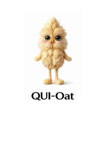

Trade Mark Journal No.2026/003 16 January 2026
UK00004317766 31 December 2025 (5,29,30,31,32,35,40,43)

- Class 5
- Food supplements; Powdered nutritional supplement energy drink mix; Nutritional supplement energy bars; Vitamin drinks; Nutritional drink mix for use as a meal replacement; Nutritional supplement meal replacement bars for boosting energy; Energy gels (dietary supplements); Medicinal drinks; Drinks (Medicinal -); Dietary supplement drink mixes; Powdered nutritional supplement drink mix; Powdered fruit-flavored dietary supplement drink mix; Mineral drinks (Medicated -).
- Class 29
- Snack food (Fruit-based -); Vegetable-based snack food; Dairy-based beverages; Milk drinks; Flavoured milk drinks; Yogurt drinks; Yoghurt drinks; Milk beverages; Kefir [milk beverage]; Oat milk; Almond milk; Organic nut and seed-based snack bars; Soya bean milk; Soybean milk [soy milk]; Almond butter; Rice bran oil [for food]; Rice bran oil for food; Nut and seed-based snack bars; Powdered soya milk; Rice milk.
- Class 30
- Oat-based food; Coffee drinks; Cocoa drinks; Chocolate drink preparations; Cereal based energy bars; Coffee beverages with milk; Flavourings of tea for food or beverages; Tea beverages with milk; Drinks prepared from cocoa; Oat porridge; Oat flakes; Flakes (Oat -); Oat meal; Oat bars; Porridge oats; Flour of oats; Rolled oats and wheat; Malted wheat; Buckwheat flour; Oat biscuits for human consumption; Flour of barley; Husked oats; Oats (Husked -); Oat cakes for human consumption; Oat clusters containing dried fruit; Wheat flour; Almond flour; Oatmeal; Wheat (Flakes of -); Buckwheat tea; Dried wheat gluten; Wheat germ; Buckwheat pasta; Wheat starch flour; Cereal flour; Flaked wheat; Barley flakes; Lentil flour; Bread with soy bean; Rice flour porridge; Buckwheat flour [for food]; Buckwheat flour for food; Tea of parched powder of barley with husk (mugi-cha); Crushed oats; Oats (Crushed -); Cereal preparations consisting of oatbran; Breakfast cereals flavoured with honey; Breakfast cereals containing a mixture of fruit and fibre; Barley for use as a coffee substitute; Breakfast cereals, porridge and grits; Oat-based foods; Pumpkin porridge (Hobak-juk); Snack foods made from wheat; Snack foods made of wheat.
- Class 31
- Oats; Wheat; Unprocessed oats; Oat biscuits for consumption by animals; Raw oats; Oat cakes for consumption by animals; Fresh oats; Flax [linseed] plant seeds; Cereal seeds, unprocessed; Unprocessed cereal seeds; Unprocessed flax seeds; Unprocessed chia seeds; Rye.
- Class 32
- Non-alcoholic beverages with tea flavor; Non-alcoholic beverages; Beverages (Non-alcoholic -); Energy drinks; Energy drinks containing caffeine; Soft drinks for energy supply; Juice drinks; Energy drinks [not for medical purposes]; Carbohydrate drinks; Guarana drinks; Drinking water with vitamins; Drinking water; Non-alcoholic sparkling fruit juice drinks; Bottled drinking water; Fruit juice drinks; Non-alcoholic vegetable juice drinks; Mineral water [beverages]; Non-alcoholic drinks; Fruit drinks; Non-alcoholic fruit drinks; Carbonated non-alcoholic drinks; Apple juice drinks; Powders used in the preparation of coconut water drinks; Isotonic drinks; Purified drinking water; Isotonic non-alcoholic drinks; Distilled drinking water; Orange juice drinks; Vegetable drinks; Non-alcoholic malt drinks; Fruit juice beverages (Non-alcoholic -); Non-alcoholic fruit juice beverages; Tonic water [non-medicated beverages]; Fruit flavored drinks; Green vegetable juice beverages; Non-carbonated soft drinks; Non-alcoholic drinks enriched with vitamins and mineral salts; Smoothies containing grains and oats; Drinking mineral water; Coconut water as a beverage; Coconut water as beverage; Cola drinks; Vitamin enriched sparkling water [beverages]; Mineral enriched water [beverages].
- Class 35
- Marketing by telephone; Merchandising; Product merchandising; Online retail store services relating to clothing; Retail services connected with the sale of clothing and clothing accessories; Promoting the sale of fashion goods through promotional articles in magazines; Promoting the sale of goods and services of others through the distribution of printed material and promotional contests; Merchandizing; Online retail store services in relation to clothing; Promoting the sale of goods and services of others through promotional events; Retail store services in the field of clothing; Advertising services relating to the sale of goods; Online retail services relating to clothing; Advertising services to promote the sale of beverages; Retail services relating to clothing; Mail order retail services related to non-alcoholic beverages; Retail services via catalogues related to foodstuffs; Retail services relating to bakery products; Unmanned retail store services relating to food; Promoting the goods and services of others by arranging for sponsors to affiliate their goods and services with sporting activities; Wholesale services relating to clothing; Retail services relating to delicatessen products; Retail services in relation to clothing; Promotion of goods and services through sponsorship; Promotion of goods and services for others; Promotion of goods and services through sponsorship of sports events; Retail services in relation to fashion accessories; Procurement of contracts for the purchase and sale of goods and services; Promoting the goods and services of others by arranging for sponsors to affiliate their goods and services with sports competitions; Trade promotional services; Sales promotion services; Retail services relating to horticultural products; Retail services in relation to toys; Promotion of goods and services through sponsorship of international sports events; Retail services in relation to bakery products; Promoting the goods and services of others by arranging for sponsors to affiliate their goods and services with awards programs; Advertising services relating to clothing; Wholesale services in relation to clothing.
- Class 40
- Food and drink preservation; Production of green energy; Production of renewable green energy; Energy production; Production of energy; Energy (Production of -); Preservation of drink; Drink preservation; Food and beverage treatment.
- Class 43
- Providing food and drink; Providing of food and drink; Provision of food and drink; Preparation of food and drink; Providing food and drink in bistros; Providing food and drink for guests; Hospitality services [food and drink]; Preparation and provision of food and drink for immediate consumption; Take-away food and drink services; Services for the preparation of food and drink; Serving food and drinks; Provision of food and drink in restaurants; Corporate hospitality (provision of food and drink); Food and drink catering for cocktail parties; Services for providing food and drink; Serving food and drink in Internet cafes; Providing food and drink in Internet cafes; Catering for the provision of food and drink; Services for the provision of food and drink; Providing food and drink in doughnut shops; Catering of food and drinks; Providing food and drink in restaurants and bars; Serving food and drink in doughnut shops; Providing food and drink for guests in restaurants; Serving food and drink for guests in restaurants; Food and drink catering for institutions.
QUIANTO AGRINOVA LIMITED